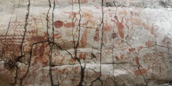
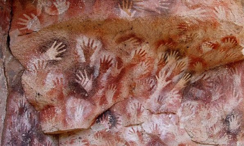
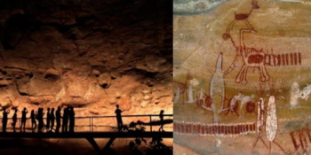

Chamamos de arte rupestre as criações artísticas feitas em rochas durante a Pré-História. Elas podem ser categorizadas em pintura rupestre e gravura rupestre.
Geralmente, este tipo de manifestação artística aparece no interior de cavernas e em outras superfícies rochosas cingidas pela marca da presença humana. Ainda hoje, muitos especialistas discutem se o desenho rupestre pode ser avaliado como uma forma de arte. Mesmo sendo difícil resolver tal polêmica, não podemos negar que a arte rupestre é uma importante fonte de informações que nos relata sobre o tempo e os costumes de alguns grupos humanos. Para alguns estudiosos, o desenvolvimento desse tipo de manifestação esteve diretamente ligado ao processo de dominação do fogo. O controle desse elemento natural permitiu o conforto e a segurança necessários para o posterior surgimento de processos de comunicação mais complexos, como a palavra e a arte.
Em geral, podemos perceber que a arte rupestre conta com motivos de feição naturalista, onde temos a presença constante de seres humanos e animais. Os homens rupestres são costumeiramente representados de forma isolada ou realizando algum tipo de ação coletiva, como o momento da caça, o parto de uma criança ou o intercurso sexual. Entre os animais, temos a predominância daqueles que serviam como alimento ou atacavam algum espaço habitado por homens.
A importância da arte rupestre para a humanidade é imensa. Além de fornecer dados e informações sobre o estilo de vida e o desenvolvimento da arte do homem pré-histórico, auxilia nos estudos sobre o comportamento nas situações mais extremas.
Na pintura rupestre, alguns desenhos sugerem que os povos primitivos possuíam conhecimentos de astronomia.
Há também trabalhos em escultura feitos pelos povos pré-históricos desde o Paleolítico Superior, no qual as figuras femininas eram predominantes.
Foi a partir da arte rupestre que se originou a primeira forma de escrita, a chamada escrita pictográfica, no período Neolítico.
Arte rupestre é a denominação das criações artísticas realizadas no período pré-histórico, principalmente entre o Paleolítico (40.000 a.C.) e o Neolítico (10.000 a 6.000 a.C.). Era caracterizada por pinturas e gravuras feitas em paredes e rochas de cavernas, bem como ao ar livre, e retratavam os costumes e práticas humanas daquela época. É possível encontrar registros de arte rupestre espalhados por todo o planeta. Entretanto, é difícil precisar a data exata da maioria das pinturas e gravuras rupestres já localizadas, pois a técnica utilizada para essa identificação – a datação em carbono – pode não ser tão precisa em decorrência de possíveis contaminações. Mas, especialistas acreditam que elas começaram depois da criação de objetos artísticos, como artefatos em osso ou pedra esculpida.
As pinturas da caverna de Altamira, na Espanha, foram as primeiras a serem apresentadas ao mundo oficialmente cerca de 150 anos atrás. Após esta, outras surgiram em todo o globo. Porém, as mais preservadas e estudadas localizam-se na França e no norte da Espanha, em Portugal, na Itália, na Alemanha, nos Balcãs, no norte mediterrâneo da África, na Austrália e na Sibéria. Locais no Brasil onde foram encontradas manifestações de arte rupestre: Parque Nacional da Serra da Capivara em São Raimundo Nonato (Piauí); Parque Nacional Sete Cidades (Piauí); Cariris Velhos (Paraíba); Lagoa Santa (Minas Gerais); Rondonópolis (Mato Grosso); Peruaçu (Minas Gerais).
Os primeiros registros de arte rupestre datados da Pré-História foram encontrados na Caverna de Altamira, na Espanha, há aproximadamente 150 anos, pelo farmacêutico, botânico e arqueólogo espanhol Marcelino Sanz De Sautuola. Na época em que foram descobertos, os estudiosos não acreditaram na autenticidade das imagens e questionaram a capacidade do homem primitivo de criar algum tipo de arte. Porém, no século XX, aquelas pinturas e gravuras encontradas foram aceitas como realizadas pelo homem pré-histórico.
Atualmente, afirma-se que a arte rupestre teve início com a chegada do homem de Cro-Magnon (população primitiva do homo sapiens) à Europa. As pinturas mais antigas estão localizadas na Caverna De Chauvet, na França e estima-se que foram criadas há cerca de 32 mil anos.
Algumas demonstrações de arte rupestre encontradas no continente europeu: Caverna de Les Trois-Frères, França (pinturas rupestres do Paleolítico Superior); Complexo de Cavernas de Lascaux, França (uma das mais conhecidas do mundo e Patrimônio Mundial da UNESCO); Caverna de Altamira, Santander, Espanha (arte rupestre do período Paleolítico Superior); Arte Rupestre do Vale Camonica, Itália (pinturas feitas na Idade do Ferro).
As pinturas rupestres apresentam características singulares como as temáticas, técnicas e materiais empregados. Essas manifestações possuem algumas distinções, dividindo-se em gravuras rupestres e pinturas rupestres. A primeira consiste na aplicação de pigmentos sobre superfícies, e a segunda é a gravação de desenhos feitos com fissuras nas rochas.
É interessante salientar que o nome dado ao tipo de arte encontrada no interior das grutas e cavernas recebe o nome de arte parietal, sendo portanto uma "vertente" da arte rupestre.
As primeiras técnicas que foram utilizadas eram bastante simples, consistindo em linhas e traços e em "mãos em negativo". Esse método resumia-se em colocar as mãos nas paredes das cavernas e assoprar pigmentos em pó sobre elas, a fim de obter a silhueta das mãos. Mais tarde, outras formas de representação surgiram até que eles dominassem elaboradas técnicas claro-escuro e pinturas policrômicas, ou seja, com várias nuances de cores distintas. Nessa época, começam a retratar animais, sobretudo bisões, cavalos, cervos. Também é possível encontrar imagens do cotidiano, com cenas de caça, dança, luta e sexo.
O Parque Nacional da Serra da Capivara é o maior sítio arqueológico da América e Patrimônio Cultural da Humanidade pela UNESCO.
© Copyright by Ricieri Juan Moraes